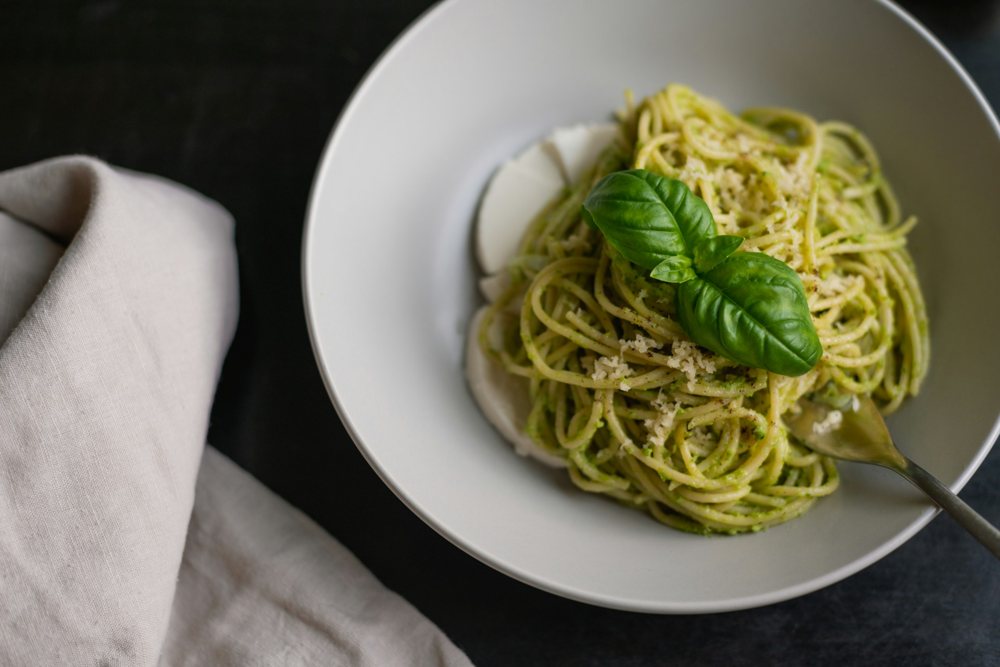

Pesto Pasta Recipe
Back to Home

A delicious pesto pasta
This is a simple yet flavorful pasta dish, featuring a vibrant pesto sauce made from fresh basil, garlic, and pine nuts.
Ingredients
- Pasta of your choice
- Fresh basil leaves
- Garlic
- Pine nuts
- Parmesan cheese
- Olive oil
- Salt
- Pepper
Steps
- Cook the pasta according to package instructions until al dente. Drain and set aside.
- In a food processor, combine the basil, garlic, pine nuts, and Parmesan cheese. Pulse until finely chopped.
- With the processor running, slowly drizzle in the olive oil until the mixture is smooth. Season with salt and pepper to taste.
- Toss the cooked pasta with the pesto sauce until evenly coated. Serve immediately, garnished with additional Parmesan if desired.